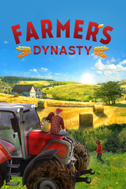

Farmer's Dynasty
Detalles
|  | |
| Tiempo de juego | No Jugado |
| Última actividad | Nunca |
| Añadido | 11/6/2024 15:27:55 |
| Modificado | 11/17/2024 14:28:56 |
| Estado de finalización | No Jugado |
| Librería | Playnite |
| Fuente | 1 TB 1 |
| Plataforma | PC (Windows) |
| Fecha de lanzamiento | 11/21/2019 |
| Puntuación de la Comunidad | 73 |
| Puntuación de la Crítica | |
| Puntuación de usuario | |
| Género | Aventura Casual Rol Simuladores |
| Desarrollador | UMEO Studios |
| Editor | Toplitz Productions |
| Característica | Compat. Total Con Mando Cromos De Logros De Préstamo Familiar Un Jugador |
| Enlaces | Punto de encuentro Discusiones Guías Noticias Página de la tienda PCGamingWiki Logros |
| Tag | Acceso anticipado Agricultura Casuales Conducción Construcción Estrategia Fabricación Gestión Mundo abierto Naturaleza Para mando Para toda la familia Primera persona Realistas Relajantes Rol Simulación Simulador agrícola Simulador de vida Un jugador |
Descripción

FARMER’S DYNASTY ofrece una experiencia de juego inédita en la que se combinan elementos de simulación real y de rol con un juego clásico de simulación agrícola.
Jamás has podido olvidar los días de infancia que pasaste en la granja de tu abuelo, como los ratos que compartiste con él mientras arabais los campos con el tractor. Los años de duro trabajo en la ciudad no han logrado que olvidases los viejos tiempos, y, por fin, has vuelto a la granja para cumplir el sueño que jamás te abandonó: reconstruir la granja del abuelo y comenzar una nueva dinastía. ¡Que tu sueño se haga realidad!
- Vive, construye, cultiva: disfruta de una mezcla única de simulador de la vida, agrícola y de construcción que te transporta al campo y presenta una mecánica de juego llena de retos.
- Repara y renueva tu granja: arregla tejados, establos y cobertizos, renueva fachadas y decora el interior de tu casa a tu gusto.
- Interactúa con un extenso mundo abierto y consigue puntos sociales: muéstrate abierto ante las caras nuevas (ser amable y amistoso tiene su recompensa) y, más tarde o más temprano, encontrarás pareja para vivir ¡e incluso para tener hijos!
- Completa desafiantes misiones en tu entorno y disfruta de la vida campestre en todo su esplendor y con todas sus facetas, por ejemplo, haciendo una fogata o saliendo a pescar.
- Ponte a los mandos de tractores y demás maquinaria agrícola: ya sea antigua o nueva, depende de ti y de tus habilidades agrícolas y económicas tener un equipamiento viejo y oxidado o supermoderno para labrar los campos y ganarte el pan de cada día.
- Disfruta de la vista de pájaro de tu granja: ¡tu dron te ofrece unas imágenes increíbles del paisaje!
- Planta, cuida y cosecha verduras, encárgate de tus animales y vende tus productos: ya sea en los establos, en los campos o en el invernadero, hay mucho que hacer, ¡así que manos a la obra!